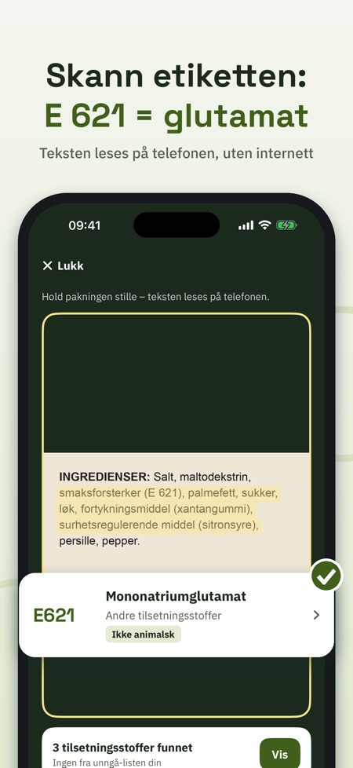
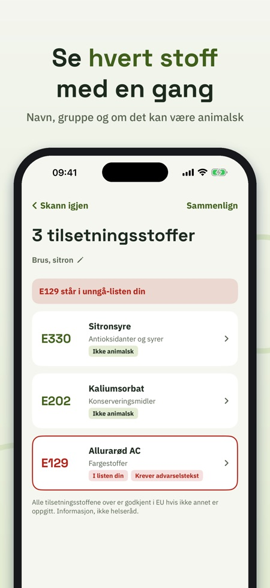
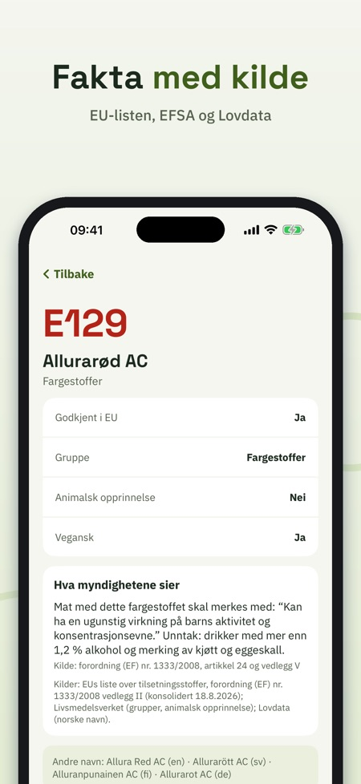

Skann innhold, forstå stoffene. Rett kameraet mot ingredienslisten og se med en gang hva hvert E-nummer er. Alle 339 tilsetningsstoffene på EUs liste, med kilder. Virker uten internett.



Hva er E 471? Og er E 120 vegansk? E-koll leser ingredienslisten med kameraet og forklarer hvert tilsetningsstoff – rolig, kort og med kilde.
Uten kjøp: 5 skanninger per dag, pluss søk og fakta om alle stoffene, grupper og guider. E-koll Full (engangskjøp, ikke abonnement): ubegrensede skanninger, unngå-liste, historikk og sammenligning.
SKANN ETIKETTEN
Rett kameraet mot ingrediensene. Teksten leses direkte på iPhonen din, også uten internett. E-koll finner både E-nummer (E 330) og navn (sitronsyre), også på svensk, dansk, finsk, tysk og engelsk. Ingen bilder lagres eller sendes.
ALLE TILSETNINGSSTOFFER PÅ EU-LISTEN
339 E-nummer fra EUs regelverk for tilsetningsstoffer, med navn på seks språk, gruppe og om stoffet kan være av animalsk opprinnelse. Norske navn fra forskrift om tilsetningsstoffer (Lovdata). Der en myndighet sier noe mer, står det med kilde: for eksempel advarselsteksten for seks fargestoffer, at titandioksid (E 171) ikke lenger er tillatt i mat, og merkereglene for søtstoffer og sulfitter.
SØK OG BLA
Søk på nummer eller navn på hvilket språk som helst. Bla i seks grupper: fargestoffer, konserveringsmidler, antioksidanter og syrer, fortykningsmidler, søtstoffer og andre.
DIN EGEN UNNGÅ-LISTE
Velg stoffene du selv vil unngå – av egne grunner. Hurtigvalg: fargestoffer med advarselstekst, kan være animalsk, søtstoffer, sulfitter, nitritter. Hver skanning markerer dem tydelig.
HISTORIKK OG SAMMENLIGNING
Gi skanningen et navn og finn den igjen. Sammenlign to etiketter side om side.
LÆR MER
Korte guider: hva E betyr, hvordan et tilsetningsstoff godkjennes, hvordan du leser en ingrediensliste, advarselsteksten om fargestoffer og vegansk eller ikke.
E-koll gir informasjon, ikke helseråd. Godkjent i EU er utgangspunktet. Appen er uavhengig og ikke knyttet til EU, EFSA eller noen mattilsynsmyndighet.